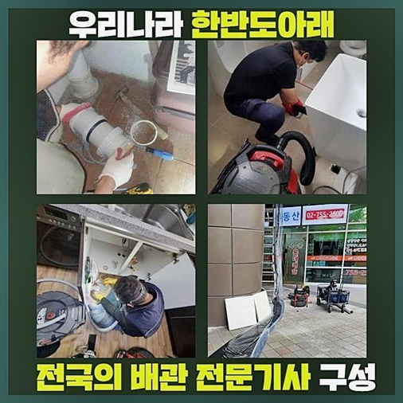
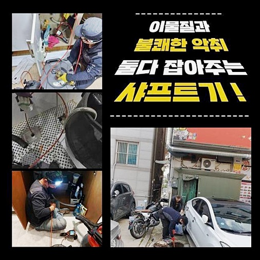
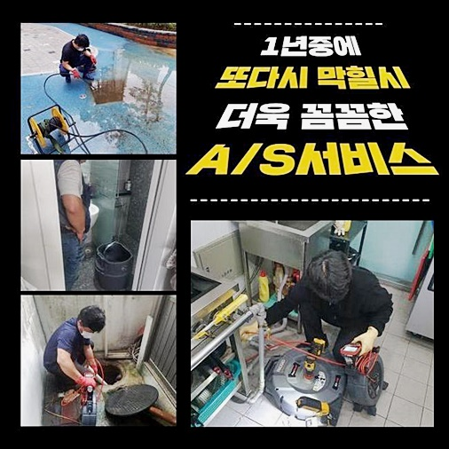
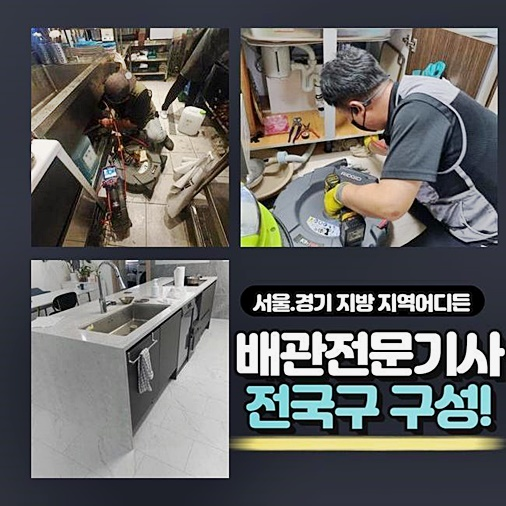
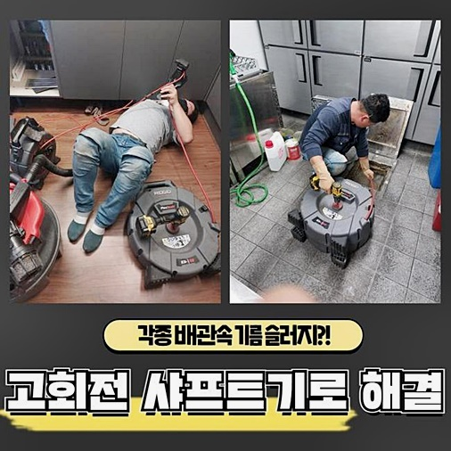
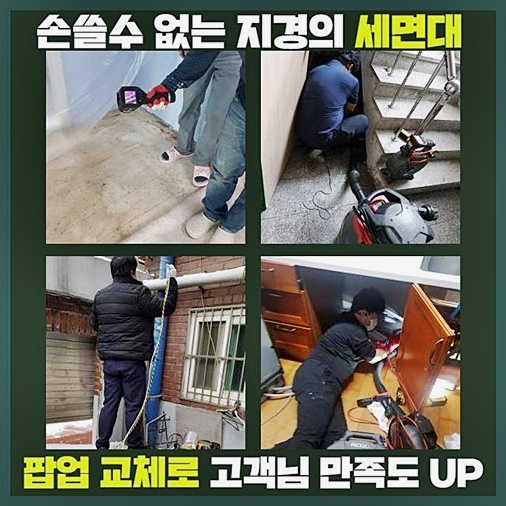

🏠 강동구 둔촌동화장실뚫음 성내동 악취차단 누수
용인 싱크대막힘 전문 시공 후기

📋 작업 개요
- 위치: 용인
- 서비스 유형: 싱크대막힘, 하수구막힘, 배관막힘, 맨홀막힘, 누수수리, 역류해결, 뚫는업체, 배관청소, 고압세척, 악취차단
- 작업 일시: 2024. 6. 15. 17:01
- 업체명: 하수구수사대 (010-5615-2118)
🔍 문제 상황
강동구 둔촌동화장실뚫음 성내동 악취차단 누수
많은사람들이 뭉쳐서거주하는 다세대같은 주거형식의경우 하수구를쓰는 경우가많으므로 배수관을 해결해달라는 문의가많습니다
여러 주민들이 생활하면서 욕실 싱크대 배관을 거쳐서 이용했던 물을 내려보내면 주택에 설치 되어 있는 메인 하수관에 고여들어서 다양스러운 이물질들이 쌓일 수밖에 없습니다
잔여물질들이 배수관쪽의 관을막게되서 하수구를 이용할수없게끔 만들어지는것이죠
하수구막힘으로 하수도물이 확실히 빠지지못한다면 전문설비를 통해 해결하셔야해요
이틀전에 다녀왔었던 작업사례로 설명드리려고하니 꼼꼼히 읽어보신다면 도움이될거라고 생각해요!
다세대가 살고있는 일부의 댁에서 물빠짐이 원활치않아 곤란함을 겪게되었다고 전화주셨다고 하셨어요
우선시로 점검한건 여러세대에서 이용한물이 모두고이는 메인하수구를 검사하는일이죠
자주 하수관이 막히게될경우 중요한부분으로는 막힘원인을 세세하게 알아내야해요
무슨이유로 막힘증세가 일어났는지 배관내부속에 이물이뭔지 알고있어야 올바른 방법을통해 신속정확히 배관작업이 진행될수있죠

🔎 원인 분석
💡 전문가 진단: 정밀 진단 장비를 사용하여 슬러지의 고착 여부를 판명하고 타격/세척 작업을 실시했습니다.
바깥쪽 맨홀하수구에 내부쪽을 들여다보니 물이역류하고 배수되지못하는 상태였는데요
막힌맨홀을 체크해보니 지속적으로 내버려둘경우 건물안에 거주하고계시는 전세대에서 배수상태가 더욱더 심각해질것으로 확인되었는데요
아파트에선 일층부터 배관막힘때문에 인하여 불편한점들이 발생하게되죠
2차피해가 이어지면 누수나 역류같은증세가 발발되기도하죠
계속손해가 발생되지않도록 가능한빠르게 하수도작업이 진행되야만했어요
역류한물은 필수적인 장비인 석션장비로 흡입하였죠
넘친물을 빨아들인후 아래쪽에 배수구안을 파악하기위해서 내시경도구를 활용하는데요
배수관속은 사람육안으로 확인할수없기에 하수구카메라가 있어야해요
하수구 현장이라면 내시경기는 필수로 이용하는 장비라고 알고계시면 됩니다
이장비로 들여다봤더니 배관통로의 오염물이 가득붙게되어 막힘증세가 생긴것으로 확인되었고 하수구를 점검해본지 오랜기간이 지난걸로 확인되었어요
배관속을 막게된 오염물들이 한세대만 나타난게아니라 엮여져있는 하수도속이 문제를보였던 상태인것을 파악했기에 배관고압세척을 통하여 청소를해야했어요

🔧 작업 과정
다양한 이유들로 하수도가막혀 문의하고계세요
무슨이유를 통해서 전화주실지 알수없다보니 어떤상황이든 대처할수있도록 첨단기계를 구비하고있어요
어떤곳이라도 깔끔한 시공을통해 막힘을 뚫어내야지만 재발문제가 발생하지않는답니다
저희의경우 최첨단배관 전문기계를 보유하고있고 항시도구를 검수하고 깔끔히 관리하고있습니다
의뢰현장에 방문드려 장비를 바로이용하는데 문제가없게끔 세세하게 체크하고있으므로 하수구문제를 신속한 대처가가능하죠
내시경장비 영상을통해 잔해물이 하수도를 막은이유와 작업계획에 관해서 상세히 설명드린다음 세척을 진행하게되었죠
배관고압세척은 하수도를 뚫게될때 가장많이 사용시되는 작업방식이죠
좋은성능을 보이지만 잘못쓰면 하수구손상까지 발현되는 경우가될수있어 실력이있는 전문가가 사용해야해요
저희들의 경우에는 수리를 진행했던 이력이 풍부하신 작업자가 하수배관의상태를 꼼꼼하게 확인하고 걱정하지않아도 되겠습니다
강력한고압의 힘을써서 배관안에 쌓이게된 이물질을 분해하고 잔여물이 달라붙은 하수구벽면을 때를밀듯이 속시원히 없애면서 배관청소를 실행했답니다
여러번이나 이과정을 진행하며 오염물이 말끔히 제거될수있도록했죠
물빠지는곳이 완벽히 뚫려서 심각했던 악취도 사라졌습니다
하수구청소가 빈틈없이 진행이되면 악취문제도 해결이되기에 철저한수리가 중요하답니다
막힘증상이 유발된 하수관을 해결하기위해 전문인을 알아볼때 기술력이있는 전문인에게 의뢰하시는것이 좋습니다
전용기기들을 보유하는것도 중요하지만 손상없이 활용할수있는 기사분께서 계신곳인지 세세하게 파악해봐야해요
철수하기전에 작업이 확실하게 마쳐졌는지 카메라도구를 통하여 살펴보고나서 물빠짐상태는 정상적인지 체크하고나서야 작업을 마무리했어요
청소중에 주변에 튄 오염물은 물세척을 진행해서 문제없게끔 정리해드렸죠


✅ 작업 완료
많은사람이 거주하고있는 다세대형태는 간헐적인 배관검사가 필요하답니다
하수구막혔을때 한가정만의 불편이아닌 전체적인 피해가나타나기에 막힘증세를 내버려두지말고 문제발견즉시 의뢰주시길 바라겠습니다
하수구와 관련하여 문의하시면 명확히 알려드리겠습니다
1시간안팎으로 도착이가능하며 투명히 작업내용을 공개하므로 걱정마세요!
이것외에도 궁금한것들이 있으실경우 시간상관없이 연락하시어 물어보아도 괜찮으므로 맘편히 연락주시면 상세한상담으로 맞이해드릴게요



⚠️ 베란다 누수 및 방수 관리 방법
- ✅ 비가 많이 올 때 창틀 주변이나 아래층 천장에 얼룩이 생기는지 정기적으로 확인해 보세요.
- ✅ 우수관 주변 실리콘 마감이 들뜨거나 깨진 틈새가 있는지 손상 여부를 수시로 체크하세요.
- ✅ 베란다 바닥 타일의 줄눈(메지)이 소실되면 그 틈으로 물이 침투하여 누수가 유발됩니다.
- ✅ 누수 의심 증상 발견 시 방치하면 아래층 손실이 커지므로 즉시 전문가의 진단을 받으십시오.
💡 핵심 정리
- 확실한 장비 작업(내시경 점검 및 샤프트 스케일링)으로 원인을 뿌리 뽑습니다.
- 작업 후 1년 이내에 동일한 부위 재발 시 100% 무상 A/S 서비스를 보장합니다.
- 서울 · 경기 · 인천 전 지역에 24시간 언제든 긴급 출동할 수 있도록 항시 대기 중입니다.
❓ 자주 묻는 질문 (FAQ)
🚨 용인 싱크대막힘 문제로 고민이신가요?
정확한 원인 진단과 확실한 시공으로 재발 없는 해결을 약속드립니다.
24시간 긴급 출동 | 서울 · 경기 · 인천 전지역 | 1년 내 재발 시 무상 A/S